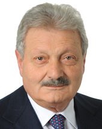

by Stephen Karmazyn and Joe Sutherland
The European Parliament is an institution not without its flaws. With elections only six months away, a new breed of politician is beginning to eek their way through the cracks of the institution.
Every politician touts their importance. Every politician brings a vision to the table. Every politician has plans for the future—even if that plan is to one day completely reshape the European Union.
From independent firebrands to quiet centrists, there is a massive range of opinions within Europe's political powerhouse—but how do they come together and make it work?
“We don't want a civil war. We should take a stand now before it's too late”
Ludovic de Danne, European Advisor for Marine Le Pen
A Necessary Evil
Currently, the Parliament is composed of seven coalition groups, each made up of a number of national parties from across the member states. A final group catches MEPs who do not affiliate with any of the main coalitions.
Most of the groups are follow the traditional alignments: right of centre liberals advocating free-market and integration, and left of centre socialists. Stauncher and more radical groups exist at both sides of the political spectrum.
The European People's Party, a party made up of Christian Democrats and which has existed since the beginning of the Union, has been the majority political bloc for ten years. They hold just over a third of seats.
George Lyon, one of six Scottish MEPs and a member of the centre-right Alliance of Liberals and Democrats for Europe (ALDE) is an example of the more traditional sect of the European Parliament.
"We are, as a group, the kingpin of the Parliament," he says. "We sit between the big centre right bloc and the socialist and green bloc on the left."
He argues his group are therefore able to give a deciding swing when votes come down to it.
They believe in increased economic integration, and are strong supporters of the internal market. Perhaps most importantly, they believe national interests are best served from within the EU.
They sit as the third largest grouping in the European Parliament.
Lyon spoke about the dynamics of the European Parliament system, with a sort of top-down approach, where each party looks to the one above it to try and form larger pacts and therefore have more influence come voting time.
With such the vastly different parties in the Parliament, compromise is often the only way to get things done. Lyon explains that his group often has to cooperate with at least two or three others to make decisions.
“We are, as a group, the kingpin of the parliament”
George Lyon, Alliance of Liberals and Democrats for Europe
But this can also create a "lowest-common denominator politics, where absolutely nothing ever changes", thanks to vastly different views and need for instance bargaining for majorities.
Desperately needed reforms, he says, are extremely difficult to pass as a result.
Dr. Michael Geary, assistant professor of modern Europe and the European Union at Maastricht University, agrees that compromise is essential.
"It is a hallmark of the integration process in general," he says.
"Applying rigid dogma is a recipe for disaster. Compromise is a necessary evil. You can't apply the same principles that exist at a national level to the European Parliament."
It's going too fast
In recent times, less traditional, Euroskeptic national parties in the right-wing Europe of Freedom and Democracy (EFD) bracket have risen. Often, the main goal of parties within this particular coalition is either the major reforming of the entire Union to be far less intergovernmental.
In some cases, parties actively seek its dissolution, or their country's total withdrawal from the Union.
They have grown quickly in popularity as immigration rises, the economy suffers, and countries hand more power to Europe, which is often seen as a faceless monolith.
Daniel Correa of lobbying group European Movement International says directly assigning the rise to one factor is too simplistic.
"Despite the widespread belief that decline in economic growth literally translates into higher vote share for right-wing or nationalist parties, the relationship between extremism and economics is much more complicated," he says.
Year joined
■ 1957
■ 1973
■ 1981
■ 1986
■ 1995
■ 2004
■ 2010
■ 2013
Nevertheless, these parties are often the centre of media attention, thanks mostly to enthusiastic and determined leaders such as Marine Le Pen of the French National Front.
Ludovic De Danne, European Advisor for Le Pen's cabinet, said that on the spectrum of European Union reformists and abolitionists, his party sits somewhere on the middle.
"We think it's not possible to reform the EU," he said, "but it's possible to propose something else. Something else then what is being constructed today."
He warns that without radical change, or even a whole new political movement in Europe, the continent is at risk of "a third world war or the collapse of our economies".
"It's not today, it's going too fast, it's dangerous, it's going to collapse our economies, it's going to bring hate between peoples.
"We don't want a civil war. We should take a stand now before it's too late."
“It's not possible to reform the EU, but it's possible to propose something else”
Ludovic de Danne
Such apparent embroidery is not without its reasoning. He wants to see the European Commission abolished as it is not democratically elected, and wants a parliament made up of national parliamentarians.
They also seek to curb immigration and globalization, and want to become protective of their country's markets. De Danne argues the only way to do this is to start from scratch.
"We want to unite everybody who says that this is not a good direction [for the EU]," he says. "We want to renegotiate treaties. We want to get out of the Eurozone.
"We want to defend our civilization as a whole."
De Danne explains that his party views the Union as a failed institution, but with some good ideas buried deep beneath the surface. He even compares its deficiencies to the Soviet Union.
He says that France sends "the losers, the wannabes, and the has-beens" into the Parliament, while he praised Germany for sending specialized politicians.
He claims the Union gives countries a say on issues that do not directly affect them, which is unfair on other member states—"why the hell should Austria or Slovakia, countries who do not have seas, be allowed to vote on fisheries?"—and he disapproves of the ease with which people can pass through Europe.
"The world village is probably very beautiful for 1% of the world," he says. "We don't want the world to transform into one huge New York City. Maybe it will happen in 500 years when everyone is mixed up and speaks the same language, but it's not the case today. We have different traditions and cultures."
They don't do anything
The UK Independence Party, a national, right-wing populist party from the United Kingdom, also has radical ideas for the EU. In fact, they don't believe that the UK should even be a part of it at all—even though they have ten votes within the parliament itself.
"They don't do anything," George Lyon says. The statistics back him up, as UKIP is rated as one of the laziest parties in the Parliament, attending fewer than half of committee meetings.
Lowest European Parliament session attendance records
27%
Justina Vitkauskaite
(LTU)
Alliance of Liberals and Democrats for Europe
30%
Godfrey Bloom
(UK)
Europe of Freedom and Democracy
35%
Brian Crowley
(IRE)
Alliance of Liberals and Democrats for Europe
37%

Gino Trematerra
(ITA)
European People's Party
43%
Paul Nuttall
(UK)
Europe of Freedom and Democracy
44%
Nigel Farage
(UK)
Europe of Freedom and Democracy
"My voters did not vote for me to go native," said Nigel Farage, leader of UKIP when he came under fire for his lunchtime pint of beer.
"They didn't vote for me to move to Brussels, they voted for me to campaign to get out of the European Union and that's what I'm going to go on doing."
Farage is rated as having the sixth lowest attendance rating of all 766 MEPs. Two other UKIP members rank below him.
"Their principle position is they hate the place. They never turn up to committees, they're never engaged. They're not part of the discussion on any deals. Their default position is to vote against anything, even if it's against British national interest."
This creates an interesting dilemma. UKIP has a vested interest to see the EU fail as it will support their party's main platform. As such, when they gain power in the parliament, it stands to reason that they may aim to sabotage everything regardless if doing so is beneficial for the UK or not.
"They hate the EU more than they like the 3.5 million jobs that we get out of it," Lyon explains, "it seems a bizarre political position to take. Their presence is a protest."
Daniel Correa says "generally speaking, extremists are relatively minor political players", and that "no significant support for right-wing parties has been actually noted" in national elections.
"If many of the views held by Le Pen and others were put into practical effect," Dr. Geary says, "it would almost certainly lead to a worsening economic and social environment in those countries.
"Leaving the Eurozone or worse, leaving the EU, would not solve France's problems—it would accentuate them. It's a false vision."
"The prospect of our referendum is not a question of if but when," Lyon adds. "It is now forcing British industry, and big overseas companies who invest in the UK to be worried about the UK leaving the EU."
He says such a move would be "disastrous" to what he describes as the most competitive business environment in Europe.
Through what De Danne describes as bilateral agreements between like-minded parties such as UKIP and National Front, they eventually plan to control a large enough sector of the Parliament to force other parties to listen to them.
A UKIP—National Front alliance was previously proposed, but UKIP was unreceptive to the deal, which De Danne described as fear of "liberal media demonization".
Such a threat is "always dangerous," Lyon admits, "if you don't take it on."
UKIP did not immediately respond to requests for comment. ■
Image credits: Ash Crow/Wikimedia Commons; NdFrayssinet/Wikimedia Commons; George Lyon; Christian Hartmann/Reuters; European Parliament
All charts designed with Datawrapper
{kind=link}
{kind=link}